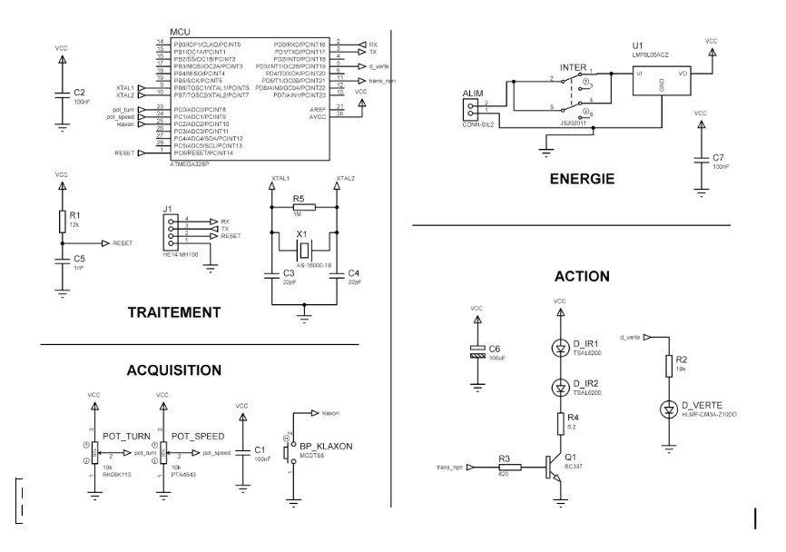
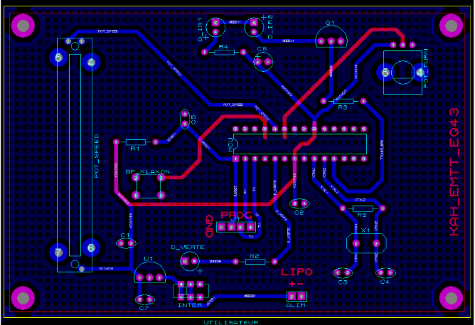
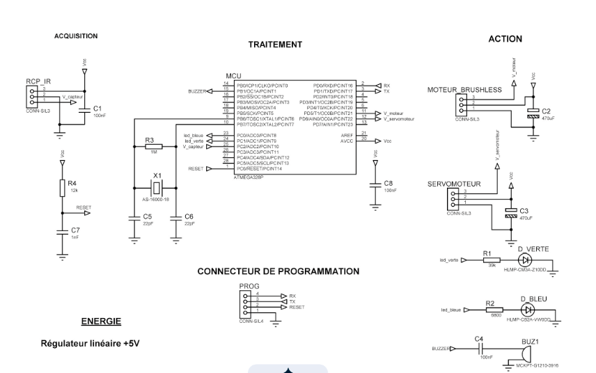
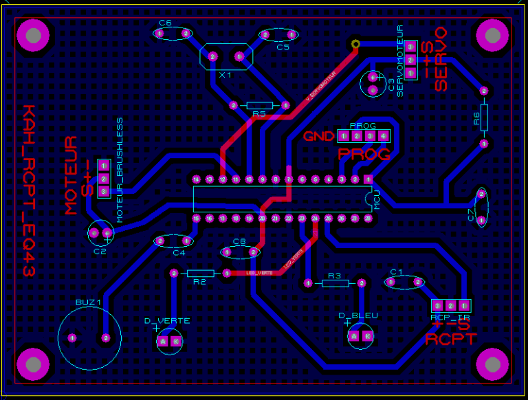

Kart à hélice (Émetteur / Récepteur)
Projet en binôme | Communication matérielle
Contexte & Objectif
L'objectif de ce projet était de créer un système de communication à distance pour commander un Kart à hélice. Contrairement aux projets précédents, il a fallu concevoir deux cartes distinctes (un émetteur et un récepteur) et s'assurer de leur parfaite synchronisation matérielle et logicielle.
Réalisation
Fort de notre expérience sur le projet SLR, la répartition des tâches dans le binôme a été très efficace. Les erreurs de conception et de soudure du passé ont été évitées, nous permettant de nous concentrer sur le routage complexe des deux cartes sur Proteus Ares.
Galerie du projet




